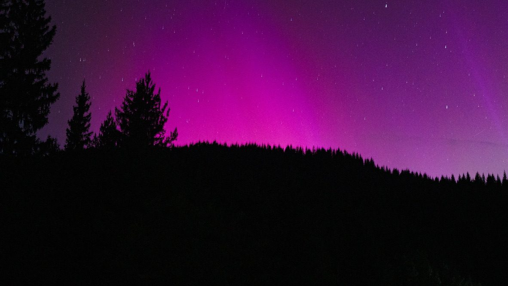
QUEST
Cover story
The Catalina Quest
Life aboard the Callisto.
Cover story
Chasing Light
Magenta over Mt. Hood.
Feature
Offseason at Silver Falls
Play teaches what rest cannot.
Issue 01 · Winter 2026

Life aboard the Callisto.
Magenta over Mt. Hood.
Play teaches what rest cannot.
A field guide to the extraordinary. Each story ends with a quest: something you can go and do.
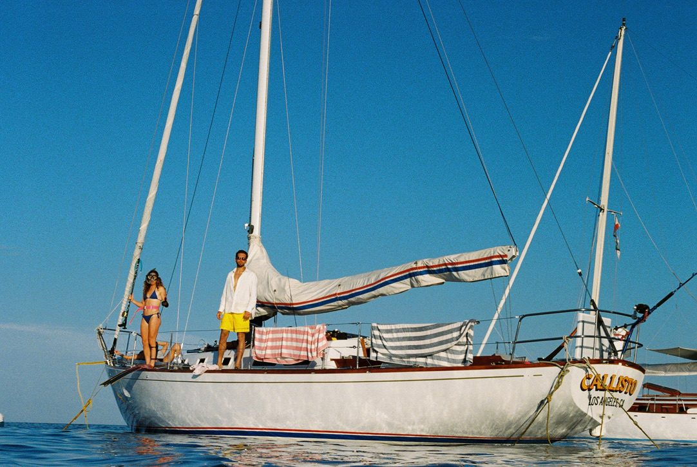
Twenty-odd miles off Los Angeles, a crew of athletes trade the pitch for the Pacific: a classic sloop, a speargun, a ridgeline, and a cove with nobody in it.
The season ends the way it always does: floodlights, noise, a last whistle. Two days later the same people are standing on a dock with dry bags, and the only sound is halyards slapping a mast.
Catalina sits about twenty miles off the coast, close enough to see on a clear day and far enough that most Angelenos never go. That gap is the point. A quest starts where convenience stops.
The crossing takes most of a morning under sail. Nobody checks a phone. Somebody trims, somebody steers, somebody makes coffee in a galley the size of a closet. By the time the island’s brown ridges sharpen into canyons, the crew has already sorted itself into a team.
Spearfishing is the quietest sport in the world. You breathe up on the surface, fold at the waist and sink into the kelp, and then you wait, lungs burning, gun still, for a fish to decide you’re part of the reef.
Athletes take to it fast, because it rewards the same things a match does: patience until the moment arrives, then total precision. Miss and you surface with nothing. Rush, and the fish is gone before you’re in range.
By late afternoon the dinghy had a catch in it. That night it became Kolten’s ceviche, eaten on deck with the anchor light on and the island going purple behind us.
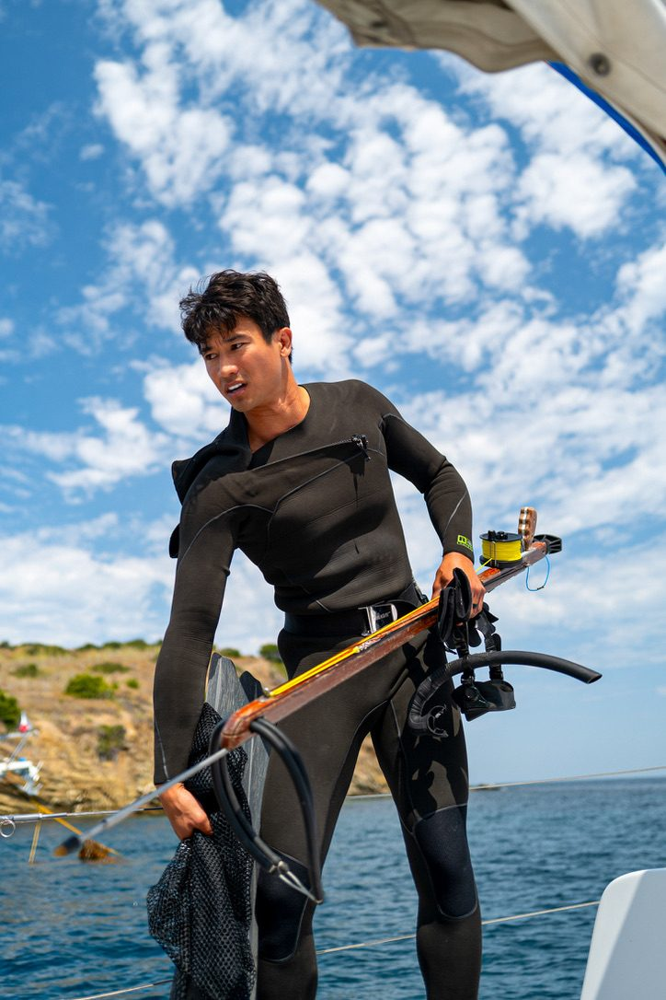
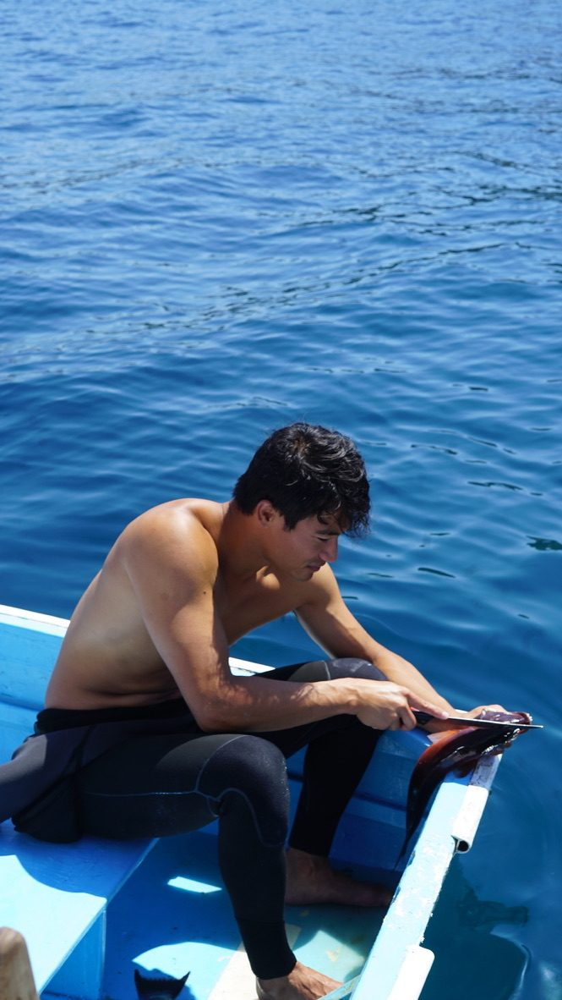
“Spearfishing taught me patience, just like waiting for the perfect pass in a match.”Suggested quote · confirm with the athlete
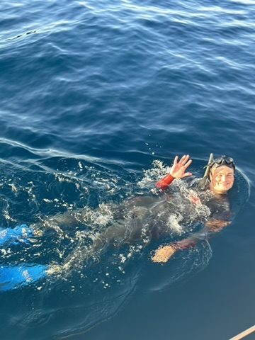
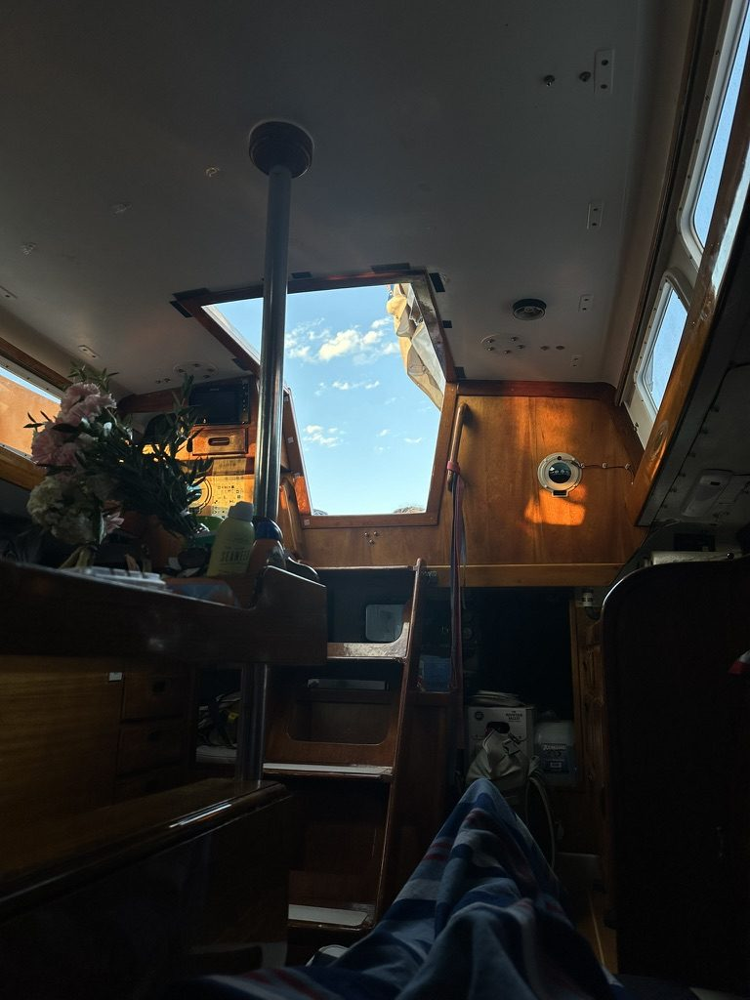
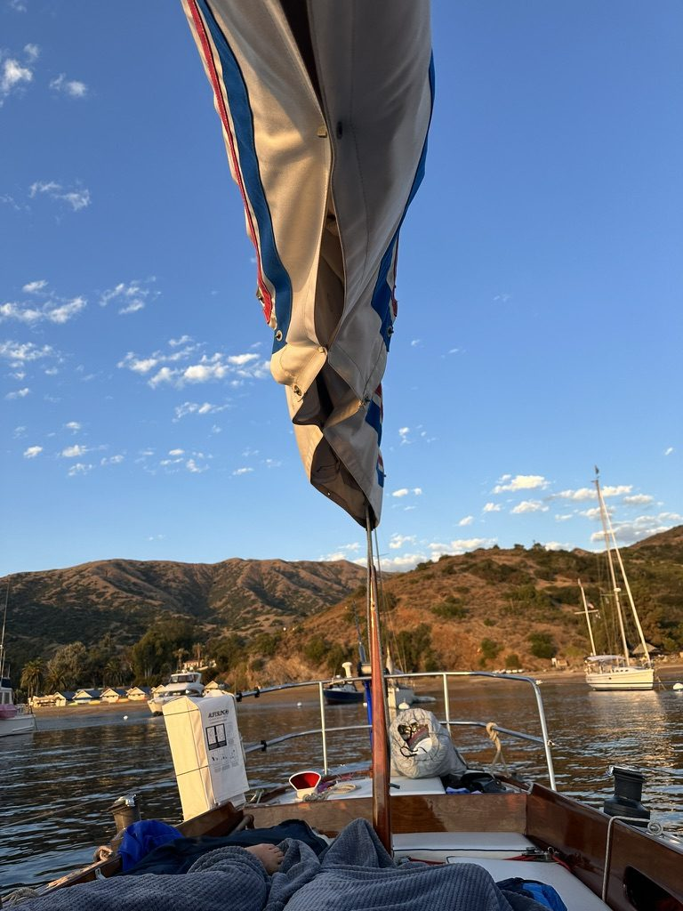
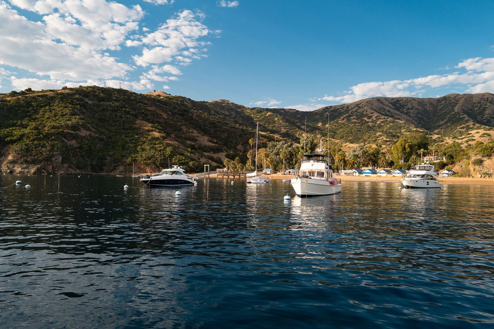
On land, Catalina is steeper than it looks from the water. The interior is wild: bison country, fox country, and some of the most demanding trail in Southern California.
We hiked until the boats in the cove turned into white dots, then scrambled down to a beach with nobody on it. Fatigue does something useful to a group. Small talk falls away, and the conversation turns to how each of us handles the hard part, on a trail or in a final.
That’s what makes the island quest-worthy. It’s close enough to reach in a morning, and wild enough to change how you see home.
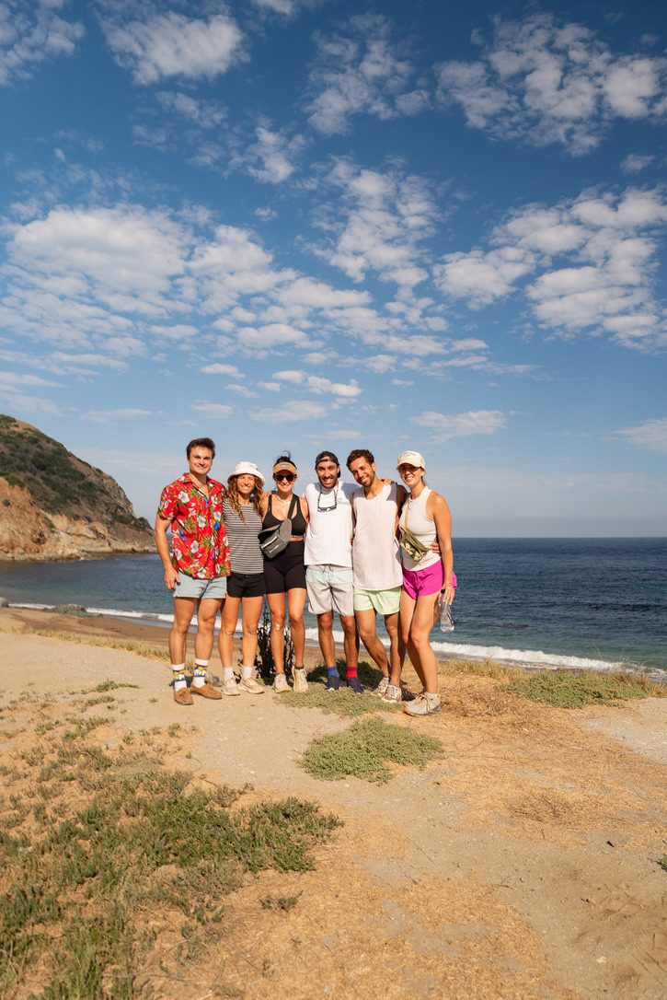
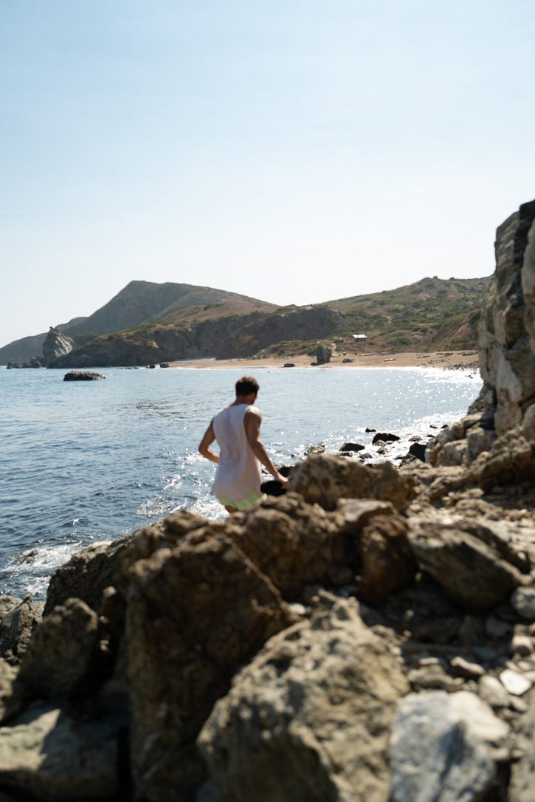
Holding still on the bottom until the fish is in range, the same way you wait for the pass to open.
A sloop only moves when everyone does their job without being asked twice.
The last climb is where the conditioning pays off, and where the mind gets tested.
The wind shifts, the swell builds, the plan changes. You adjust without complaint.
The party with the team, the day after the island. This chapter is still being written.
An hour and a bit from Portland, past Government Camp, the sky over Mt. Hood went magenta. We were there with long exposures and cold hands.
The alert came at dinner: a geomagnetic storm, strong enough that the aurora might reach Oregon. Forty miles later we were walking out to Trillium Lake in the dark, Mt. Hood a black shape to the north.
To the eye it started as a grey smear. Then the camera showed us the truth: a wall of magenta rising behind the trees, with green pooling at the horizon. Thirty seconds later, our eyes caught up.
You can’t schedule the lights. What you can control is being ready: tripod packed, batteries warm, forecast refreshed, and somewhere dark enough to see.
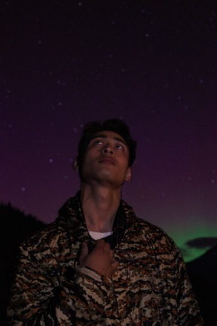
Camo in the dark, lit only by the sky. Shot handheld with a slow shutter.
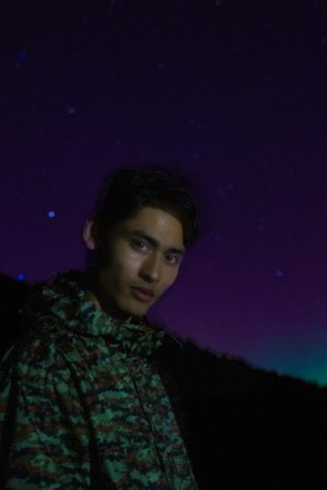
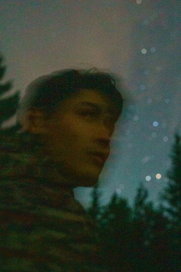
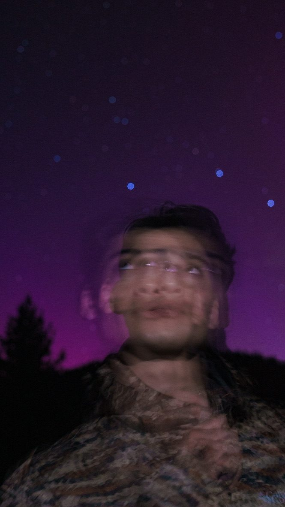
Some days the body needs recalibrating more than it needs rest. Jurrion Dickey and Tarik Kaddouri trade a recovery day for play: behind the falls, along the canyon, and out the other side.
The trail at Silver Falls does something most trails don’t: it goes behind the water. You walk under a lip of basalt, moss dripping, with the falls roaring a few feet away.
It’s the kind of place that turns a recovery day into a game. Chase each other down the switchbacks, race to the next fall, stop when the spray hits your face. The work is real, but it doesn’t feel like training.
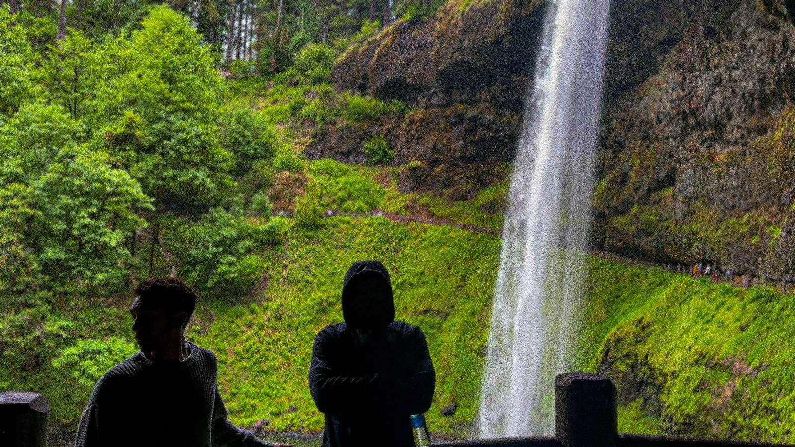
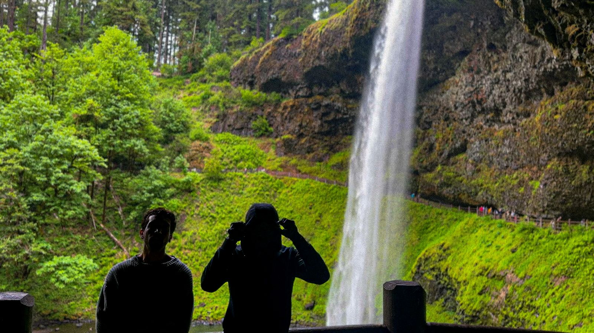
“Play teaches what rest cannot.”From the film

 RawEdit
RawEdit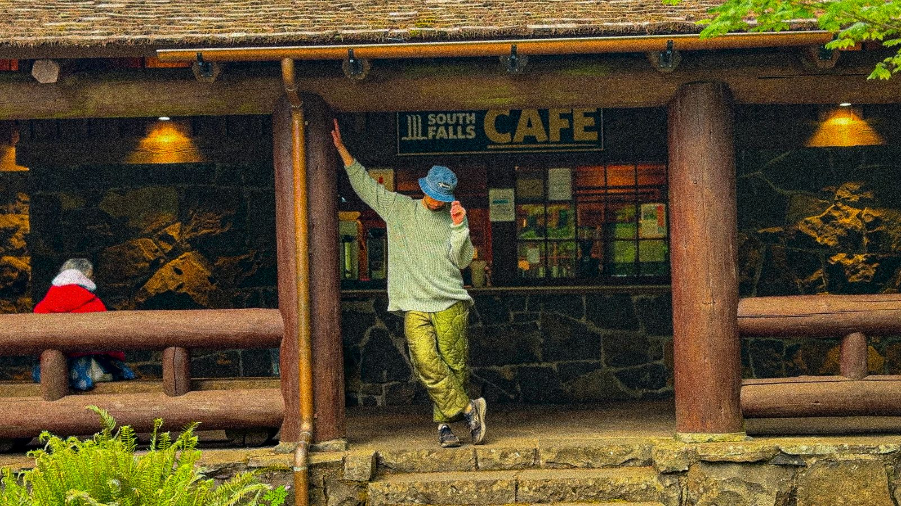
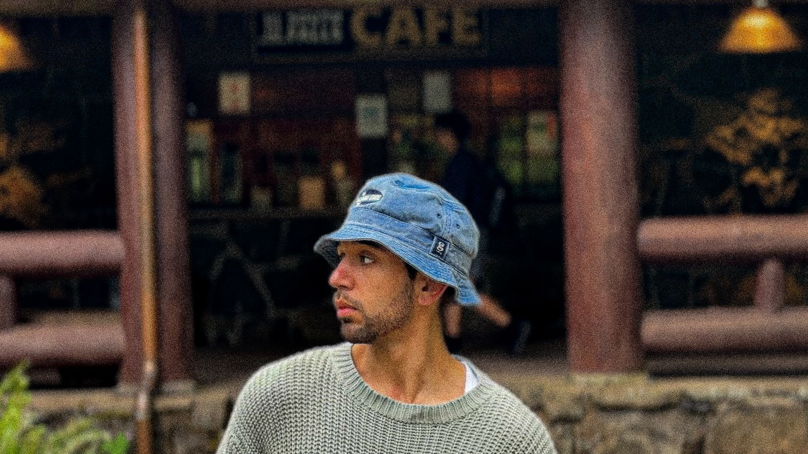

Before the drills start, someone has to set the tone. At the University of Oregon iD Camp, DJ Takumii runs the soundtrack from the sideline, from field level to soundcheck.
Every program has a system: the drills, the depth chart, the playbook. Under the system there’s a culture, and you can hear it before you see it.
Takumii sets up on the concrete lip of the sideline. A laptop sits on the wall and the speaker faces the field. When the first track drops, the warm-up changes pace.
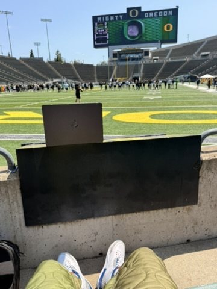
“Behind every system is a culture.”From the film
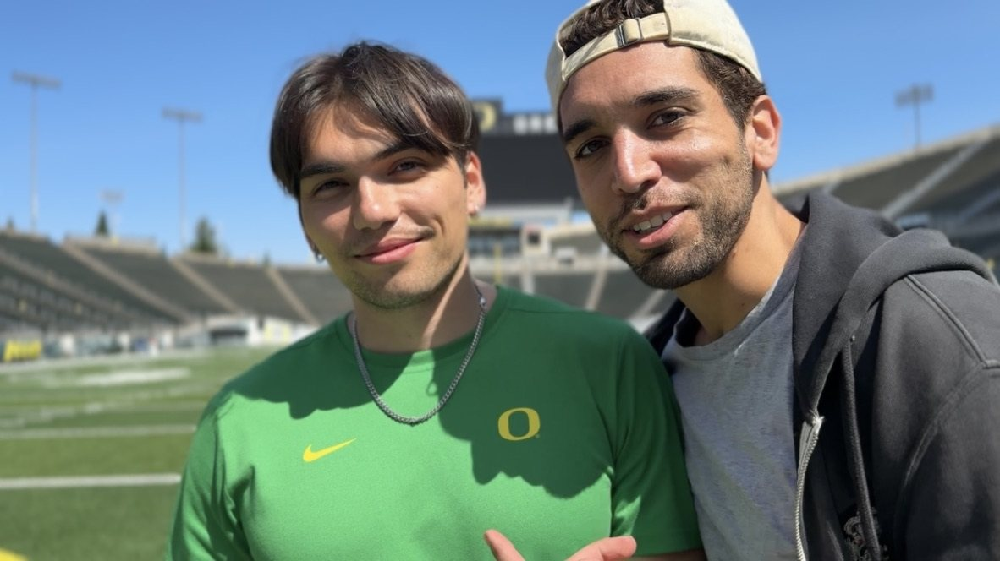
Every story in print has a film behind it. Field films by STOURI.
Training, chasing and recovering among waterfalls across 1,200 feet of elevation.
▶Play · 7:30From field level to soundcheck at Autzen Stadium, at the University of Oregon iD Camp.
What was worn and carried, piece by piece. Choose a look, then tap a point on the image or an item in the list.
Makers and credits are to be confirmed. They’ll be filled in from the shoot’s styling notes before publication.
Six things we believe.
We believe in exploration of places, ideas, passions, and the limitless potential of human creativity. Quest redefines luxury as purpose, adventure and innovation.
Every page invites you to step outside the ordinary, into the processes, stories and people behind the designs, the meals and the journeys that shape our world.
Fashion, design, athletics, adventure and culinary artistry, woven together and curated so every feature empowers you to act.
A timeless object on your shelf, brought to life by AR, RFID-driven quests and digital extensions.
From the trails of the Pacific Northwest to the coves of Catalina and the streets of Tokyo. Your map, your toolkit, your invitation.
Not just here to be read. Here to be lived. This is not just a magazine; it’s a call to action.
A real-world challenge you take on in LINQ gear, chosen from the app or the printed guide. You complete it, share it, and get rewarded.
Each completed quest unlocks a relic
Three more stories planned for the issue. They’re placeholders until the shoots happen.
Tell us who you are, and the quest board rearranges itself around you.
Open a quest, accept it, then go and do it. Points move you from Rookie to Veteran.
Rating · ◆ worth the day · ◆◆ worth the weekend · ◆◆◆ worth the journey
From Mt. Hood to Catalina, and across the Pacific to Tokyo.
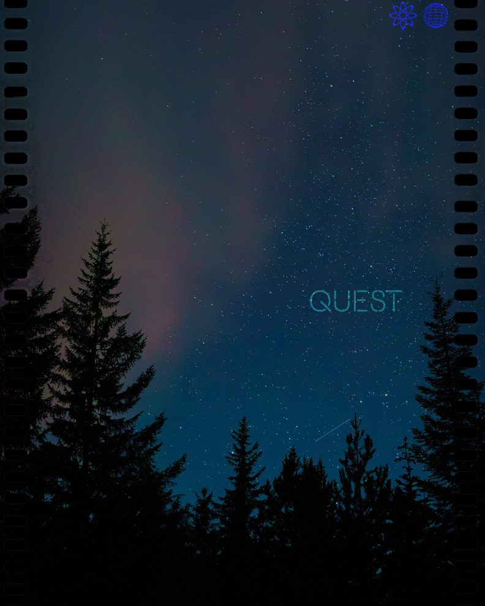
Every page links out to its film, its recipe and the full guide.
Tap the issue at partner trailheads, docks and restaurants to log a quest.
Point your phone at the cover and the sky starts to move.